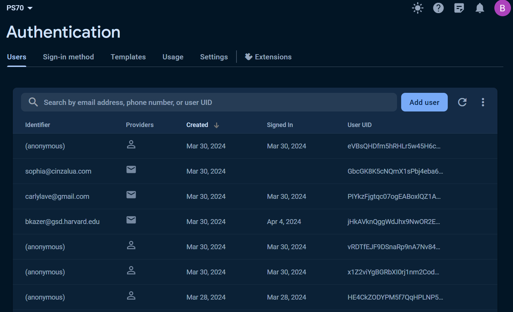
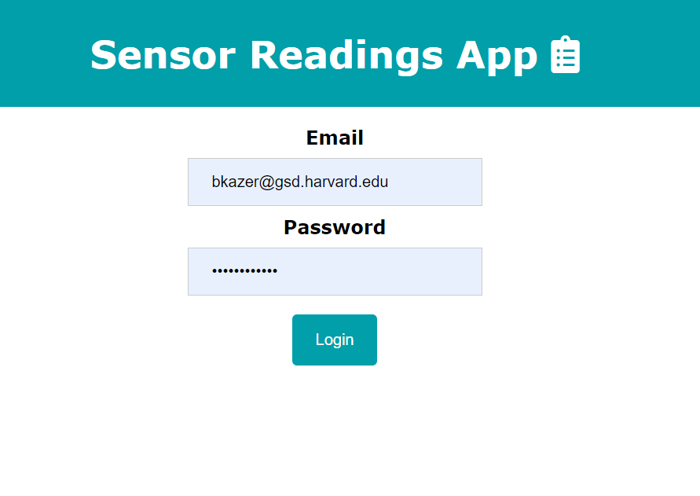

<div class="textcontainer">
<p class="margin"> </p>
<h4>Assignment: Program a microcontroller to obtain and respond to information from the internet</h4>
Team Members: Sophia Cabral, Ben Kazer, Carly Lave
<p class="margin"> </p>
For the group networking project we used a tutorial from Random Nerd Tutorials to take sensor readings from the ESP32 and display them via an app on desktop. Our idea was to create a "weather app" of sorts where the user could view environmental sensor information online.
<p class="margin"> </p>
Tutorial: [ESP32 Firebase Gauges & Charts](https://randomnerdtutorials.com/esp32-esp8266-firebase-gauges-charts/)
<p class="margin"> </p>
We used the following components for this tutorial: ESP32 (Arduino IDE, Breadboard, Photoresistor), Google Firebase
<p class="margin"> </p>
<h5>Setup</h5>
Our first step was to setup the Firebase collaborative project to host the sensor readings on the ESP32. Firebase is a backend cloud computing platform that hosts data, authentication, and services. The app creates a realtime database that streams/stores information collected via sensor/ESP32. The Firebase/ESP32 connection is made via a unique API Key and URL.
<p class="margin"> </p>
<div class="flexrow">
<img src="realtime database.png" alt="a photo of webapp" style="width:100%; max-width:350px;">
<img src="project settings.png" alt="webapp auth" style="width:100%; max-width:350px;">
</div>
<p class="caption">Admin view of the firebase realtime database and info needed to connect app with ESP32</p>
Following the steps in the tutorial, we set up the project to user enable authentication, which requires users to input their email and password in order to access sensor readings in the app. Given there are only three users of the project, all three of us have access via the Firebase app to log readings; while any new user would need to be authenticated in the project.
<p class="margin"> </p>
<div class="flexrow">


</div>
<p class="caption">Backend setup of authorized users and the live app's login page</p>
<h5>ESP32</h5>
While the tutorial provided a base template to display various sensor readings, for our purposes, we were interested in reading brightness only from the photoresistor. We wired a photoresistor to the ESP32 and connected it to our Firebase project. The Random Nerds Tutorial also walked us through a brief install of the ESP 32 as a part one for the specific project. Initial attempts were met with failure, but after some tinkering between the ESP32 and our code, we were able to get the photoresistor responsive to light and have readings display in Arduino.
<p class="margin"> </p>
<div class="flexrow">
<img src="esp diagram.jpg" alt="circuit diagram" style="width:100%; max-width:350px;">
</div>
<p class="caption">[Circuit diagram](https://esp32io.com/tutorials/esp32-light-sensor) for ESP32</p>
<h5>UI Integration</h5>
Using the Firebase config, we integrated the database host into our frontend html in order to have the app display the sensor readings in real-time.
<p class="margin"> </p>
In order to display sensor readings of brightness for the ESP32 to our computer, we developed a simple UI that connects to Firebase and shows the real-time sensor changes. The tutorial required a JavaScript integration in order to transform the data into text and image displays. We hosted the project in Github and the URL connects the Firebase project with our UI code.
<p class="margin"> </p>
<div class="flexrow">
<video controls autoplay muted loop
src="./working.mov" alt="video of a a sensor working with a webapp"style="width:100%; max-width:300px;">
</div>
<p class="caption">Demo of the webapp reading live values from the ESP32 & photoresistor</p>
We ran into some technical issues integrating the backend and frontend at this point. For whatever reason, our URL shows an outdated template from the tutorial. Despite our troubleshooting, the [URL](https://ps70-c6e19.web.app/) via Github is not connecting to the backend and updating sensor readings from the app. We do have a local URL that is accurately displaying sensor readings.
<p class="margin"> </p>
Here is a screenshot of what the end UI ought to look like, and evidence of the development. With some more time, we could debug the issue of this problem and integrate the correct frontend with our sensor readings.
<p class="margin"> </p>
<div class="flexrow">
<img src="wrong UI.png" alt="webapp auth" style="width:100%; max-width:350px;">
<img src="right UI.png" alt="a photo of login" style="width:100%; max-width:350px;">
</div>
<p class="caption">The current UI which is wrong on the left and the UI that is supposed to be showing on the right</p>
</div>